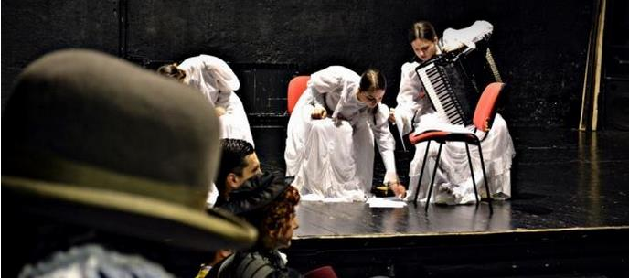
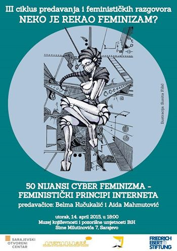

UZEJ KNJIŽEVNOSTI I
POZORIŠNE UMJETNOSTI
SARAJEVO
| O muzeju | Poveznice | Kontakt |
| Oglasi |
| Oglas1 |
| Oglas2 |
| Oglas3 |
Najnovije:
FTV promocija
FTV - Kulturno 14.4.2015. Promocija časopisa - godišnjaka Muzeja književnosti i pozorišne umjetnosti BiH BAŠTINA.
Detaljnije...
Vidi komentare
Baština
Promocija trećeg broja godišnjaka Muzeja književnosti i pozorišne umjetnosti BiH BAŠTINA. Nakon dvadeset i tri godine ponovno izašao novi broj. Na promociji govorili/e: Damir Arsenijević (teoretičar književnosti), Šejla Šehabović (književnica i direktorica MKPU), Ajla Demiragić(teoretičarka književnosti) i Zlatan Delić (teoretičar feminizma). Detaljnije...

BHT promocija
BHT - Dnevnik 3 13.4.2015. Promocija časopisa - godišnjaka Muzeja književnosti i pozorišne umjetnosti BiH BAŠTINA Detaljnije...
Vesela večer u Sarajevu
Pozorišna predstava "Vesela večer u Sarajevu" bit će izvedena na sceni Sarajevskog ratnog teatra naredna dva dana. Predstava ima za cilj da ukaže na tradicionalne vrijednosti zaboravljenog Sarajeva, Sarajeva prije 101 godinu Detaljnije...
Predavanje
Pozivamo Vas u Muzej književnosti i pozorišne umjetnosti BiH, 14. april 2015. (utorak) u 18h na predavanje Belme Kučukalić i Aide Mahmutović "50 nijansi cyber feminizma - feministički principi interneta" u okviru trećeg ciklusa predavanja Neko je rekao feminizam? koji organizira Sarajevski otvoreni centar uz partnersku podršku Fondacije Friedrich Ebert. Detaljnije...